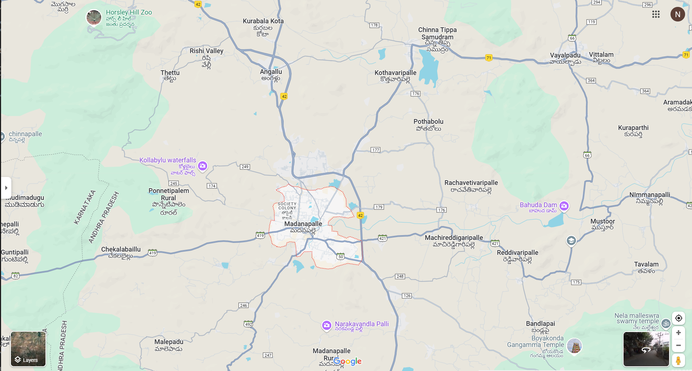

map.html
MyCity
h1 align="center">
Madanapalli
NITHEESH YEGAVINTI (212224040370)

temple.html
In the event of victory Boyas And Pala Ekari's Combinedly built the Gangamma temple, which saved them against evil forces and became famous for centuries...
Yet the Castes Of Boyars and Pala Ekari's are Dominant in The Area and Serving the Ammavaru..
water.html
A waterfall is any point in a river or stream where water flows over a vertical drop or a series of steep drops.
It's often described as a powerful, cascading flow of water, creating a mesmerizing display of motion and sound. The surrounding environment, including lush vegetation and mist-filled air, further enhances the visual and sensory experience.